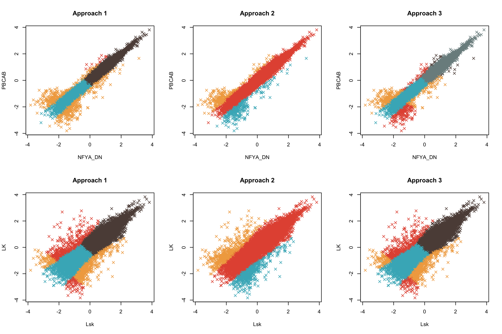

Pre-processing input data
Last updated: 2022-08-13
Checks: 5 2
Knit directory: workflowr/
This reproducible R Markdown analysis was created with workflowr (version 1.7.0). The Checks tab describes the reproducibility checks that were applied when the results were created. The Past versions tab lists the development history.
The R Markdown file has unstaged changes. To know which version of
the R Markdown file created these results, you’ll want to first commit
it to the Git repo. If you’re still working on the analysis, you can
ignore this warning. When you’re finished, you can run
wflow_publish to commit the R Markdown file and build the
HTML.
Great job! The global environment was empty. Objects defined in the global environment can affect the analysis in your R Markdown file in unknown ways. For reproduciblity it’s best to always run the code in an empty environment.
The command set.seed(20190717) was run prior to running
the code in the R Markdown file. Setting a seed ensures that any results
that rely on randomness, e.g. subsampling or permutations, are
reproducible.
Great job! Recording the operating system, R version, and package versions is critical for reproducibility.
- unnamed-chunk-11
To ensure reproducibility of the results, delete the cache directory
preprocessing_cache and re-run the analysis. To have
workflowr automatically delete the cache directory prior to building the
file, set delete_cache = TRUE when running
wflow_build() or wflow_publish().
Great job! Using relative paths to the files within your workflowr project makes it easier to run your code on other machines.
Great! You are using Git for version control. Tracking code development and connecting the code version to the results is critical for reproducibility.
The results in this page were generated with repository version e4f6d19. See the Past versions tab to see a history of the changes made to the R Markdown and HTML files.
Note that you need to be careful to ensure that all relevant files for
the analysis have been committed to Git prior to generating the results
(you can use wflow_publish or
wflow_git_commit). workflowr only checks the R Markdown
file, but you know if there are other scripts or data files that it
depends on. Below is the status of the Git repository when the results
were generated:
Ignored files:
Ignored: .Rproj.user/
Ignored: analysis/running_mcmc_cache/
Untracked files:
Untracked: .DS_Store
Unstaged changes:
Modified: analysis/candidate_latent_classes.Rmd
Modified: analysis/downstream.Rmd
Modified: analysis/index.Rmd
Modified: analysis/preprocessing.Rmd
Modified: analysis/priors.Rmd
Modified: analysis/running_mcmc.Rmd
Note that any generated files, e.g. HTML, png, CSS, etc., are not included in this status report because it is ok for generated content to have uncommitted changes.
These are the previous versions of the repository in which changes were
made to the R Markdown (analysis/preprocessing.Rmd) and
HTML (docs/preprocessing.html) files. If you’ve configured
a remote Git repository (see ?wflow_git_remote), click on
the hyperlinks in the table below to view the files as they were in that
past version.
| File | Version | Author | Date | Message |
|---|---|---|---|---|
| Rmd | c1e13d0 | Hillary Koch | 2022-07-30 | working with new computer |
| html | c1e13d0 | Hillary Koch | 2022-07-30 | working with new computer |
Preparing data for input into CLIMB
CLIMB can, in some cases, be sensitive to data preparation and normalization. This has to do with the relationship between the association labels (\(-1, 0, 1\)) and associated parameters. Most notably, if a cluster has a positive (negative) association in dimension \(d\), then the cluster mean will be positive (negative) in dimension \(d\) as well. Similarly, if a cluster has null association in dimension \(d\), then the cluster mean will be 0 in dimension \(d\). What this means is that, for data which may have positive, negative, and null associations, we want the data appropriately pre-processed such that these relationships with cluster means will reasonably hold. One should be able to test the suitability of the pre-processing method chosen using only the first step of CLIMB, the pairwise fitting procedure. We will demonstrate what we mean by that later on this page.
In some cases, such as input from a peak-calling routine, preparation of data is straightforward. In others, such has right-skewed data like RNA-seq, preparation may be slightly less so. Here, we walk through steps used for the data analyses in the CLIMB manuscript, plus additional alternatives. These pre-processing steps are:
Preparation of ChIP-seq data
Preparation of data which come from a peak-calling routine is fairly natural. This is because the data are reported as \(p\)-values, where small values provide support for the presence of a peak, and the lack of a peak corresponds to “null” behavior. We walk through the data preparation used on the ChIP-seq data in the CLIMB manuscript, though we expect this approach to be more broadly applicable to data output from a peak-calling tool such as MACS2.
First, we assume the user has chosed some peak-calling procedure,
with output reported in a format such as ENCODE narrowPeak format, which
contains information about the chromosome, start location, stop
location, and \(-\log_{10}(p\)-value) for
the peak. Next, since the analysis will be across multiple
conditions, one needs to align the peaks across the various conditions
being analyzed. In our case, we merged overlapping peak locations with
bedtools merge. For locations which had a peak in one
condition, but lacked a peak in another, we used a \(-\log_{10}(p\)-value) of 0 as a placeholder
(this correponds to the not-statistically-significant \(p\)-value of 1).
As an example, let’s read in a 2-dimensional ChIP-seq dataset, where
the peak regions have already been aligned with bedtools.
We can see that this dataset consists of the typical BED format
information (chromosome, start, stop), as well as the \(-\log_{10}(p\)-values) for 2 conditions. We
see that at row 3, there is a peak in condition 1 that is absent in
condition 2, and the reverse is the case at row 6.
pairwise_chip <- readr::read_tsv("data/toy_chip.tsv", col_names = FALSE)
head(pairwise_chip)# A tibble: 6 × 5
X1 X2 X3 X4 X5
<chr> <dbl> <dbl> <dbl> <dbl>
1 chr11 100004457 100005627 1.72 22.9
2 chr11 100006220 100007347 3.06 16.4
3 chr11 100041141 100041500 10.4 0
4 chr11 100058679 100059290 0.348 0.719
5 chr11 100168530 100170342 11.5 27.3
6 chr11 100199832 100201021 0 9.40 Now, we need to transform these data to input for CLIMB. This is shown below, but involves only a few main steps, as described in the CLIMB manuscript.
- Transform everything to \(p\)-values.
- Transform \(p\)-values to \(z\)-scores with the standard normal quantile function
- Impute \(z\)-scores at locations where a peak was absent in a condition.
library(tidyverse)
# BED file information, store this for downstream analysis, e.g. examining loci with GREAT
bed_df <- dplyr::select(pairwise_chip, X1, X2, X3)
# Actual data to prepare now
pw_df <- dplyr::select(pairwise_chip, X4, X5) %>%
# transform to p-values
purrr::map_df(~ 10 ^ -(.x))
# Filter out rows which have no peaks in any condition
# (this may happen as a by-product of data normalization, or from data subsetting)
keep_idx <- apply(pw_df, 1, function(row) !all(row == 1))
bed_df <- dplyr::filter(bed_df, keep_idx)
pw_df <- dplyr::filter(pw_df, keep_idx)
# Identify locations with p-value = 1 (these will be imputed)
one_idx <- pw_df == 1
# Transform data to z-scores using the standard normal quantile function
z <- qnorm(as.matrix(pw_df))
# Address numerical overflow
maxval <- max(z[z != Inf])
minval <- min(z[z != -Inf])
z[z == Inf] <- maxval
z[z == -Inf] <- minval
# Impute z-scores at loci without peaks
z[one_idx] <- rnorm(sum(one_idx))
# Take the negative, so that small p-value ==> large signal
z <- -z
# Quickly plot the data
plot(z, xlim = c(-3,25), ylim = c(-3,25), pch = 4, xlab = "condition 1", ylab = "condition 2")
| Version | Author | Date |
|---|---|---|
| c1e13d0 | Hillary Koch | 2022-07-30 |
Note that it is critical here that we filtered out the same rows in bed_df (the BED information) and pw_df (the data). This is because, for downstream analyses, we need to track which loci were analyzed.
Preparation of RNA-seq data
By log transformation
Here, we discuss 2 very similar ways of preparing RNA-seq data for input to CLIMB. First, lets pull some gene expression data from Gene Expression Omnibus. These data concern gene expression in Zebrafish.
library(curl)
# Download, unzip, and read in RNA-seq data from GEO
curl::curl_download(url = "ftp://ftp.ncbi.nlm.nih.gov/geo/series/GSE133nnn/GSE133459/suppl/GSE133459_RSEM_GSE133459_GFP_GSE133459_NFYADN_GSE133459_PBCAB_12hpf_zebrafish_genes_expression_tpm.tsv.gz",
destfile = "data/tpm_zebrafish.tsv.gz")
system("gunzip data/tpm_zebrafish.tsv.gz")
TPMs <- readr::read_tsv("data/tpm_zebrafish.tsv")
head(TPMs)# A tibble: 6 × 11
gene trans…¹ GFP1 GFP2 GFP3 NFYA_…² NFYA_…³ NFYA_…⁴ PBCAB1 PBCAB2 PBCAB3
<chr> <chr> <dbl> <dbl> <dbl> <dbl> <dbl> <dbl> <dbl> <dbl> <dbl>
1 mal2 NM_001… 2.04 1.39 2.64 3.65 2.21 3.3 3.8 1.6 4.84
2 ftr54 NM_001… 0 0 0 0 0 0 0 0 0
3 foxb1b NM_131… 24.6 23.6 29.5 26.7 25.9 24.4 36.1 27.6 36.1
4 zgc:17… NM_001… 4.09 6.09 4.48 7.34 5.74 10.5 10.1 8.54 9.26
5 trafd1 NM_001… 12.6 13.4 14.9 12.1 10.5 9.57 13.2 14.7 13.5
6 si:dke… NM_001… 11.3 10.8 17.0 8.61 7.46 8.59 7.03 11.7 9.52
# … with abbreviated variable names ¹transcript, ²NFYA_DN1, ³NFYA_DN2,
# ⁴NFYA_DN3We follow some fairly typical normalization strategies to prepare the data for input into CLIMB. Only step 4 is unusual.
- Pool replicates.
- Apply a \(\log2\) transform, using 1 as an offset to avoid infinities.
- Quantile normalize the data.
- Apply a location shift to the data such that the positive mode sits over 0.
We apply step 4 so that the transformed data better adhere to CLIMB’s modeling assumptions. As it is only a location shift, it does not affect the associations between gene expression levels across conditions.
library(limma)
library(modeest)
#------------------------------------------------------------------------------
# Pool together replicated data
# First, find unique conditions (here, there are three)
conditions <- stringr::str_split(names(TPMs)[-(1:2)], pattern = "[[:digit:]]") %>%
purrr::map_chr(1) %>%
unique
# Pool together TPMs across replicates
merge_dat <- matrix(NA, nrow = nrow(TPMs), ncol = length(conditions))
for(i in seq_along(conditions)) {
idx <- grepl(pattern = conditions[i], x = names(TPMs))
if(sum(idx) > 1) {
merge_dat[,i] <- rowSums(TPMs[,idx])
} else {
merge_dat[,i] <- TPMs[,idx]
}
}
colnames(merge_dat) <- conditions
#------------------------------------------------------------------------------
# Do the adjusted quantile normalization
# Remove genes which are 0s in all conditions
keep_idx <- apply(merge_dat, 1, function(row) !(all(row == 0)))
genes <- TPMs$gene[keep_idx]
merge_dat <- merge_dat[keep_idx,]
# log2 transform and quantile normalize with limma
l_dat <- log2(merge_dat + 1)
ql_dat <- limma::normalizeQuantiles(l_dat)
# Estimate the central mode
# It should be the same in every condition, due to quantile normalization
estimated_mode <- modeest::mlv(as.vector(ql_dat), method = "meanshift", par = 5)
# Center the mode over 0
z <- ql_dat - estimated_mode
colnames(z) <- colnames(merge_dat)
# Make a quick histogram of normalized expression from one condition
hist(z[,1], breaks = 30, xlab = "normalized transcripts", main = "Histogram of GFP")
| Version | Author | Date |
|---|---|---|
| c1e13d0 | Hillary Koch | 2022-07-30 |
As with the ChIP-seq, we filter out genes which are removed from the analysis, so that we know which genes we examined.
While this data pre-processing strategy was suitable for the analyses in the CLIMB manuscript, it may not always be suitable for all RNA-seq. Here, we demonstrate another variation on this data pre-processing strategy. Here, we will pool single-cell experiments of hematopoietic progenitor cells, take from Olsson et al. 2016 (accession code GSE70245).
After reading in the data, we see that there are 382 cells in total in the experiment, coming from 4 unique cell populations.
sc_dat <- readr::read_tsv("data/olsson2016.tsv")
head(sc_dat)# A tibble: 6 × 383
uid Lsk.19 Lsk.20 Lsk.27 Lsk.34 Lsk.36 Lsk.37 Lsk.50 Lsk.57 Lsk.58 Lsk.59
<chr> <dbl> <dbl> <dbl> <dbl> <dbl> <dbl> <dbl> <dbl> <dbl> <dbl>
1 Marc1 0 0 0 0 0 0 0 0 0 0
2 March1 0 0 0 0 0 0 0 0 0 0
3 Marc2 0 7.43 3.28 7.03 2.66 0.934 0 0 0 4.60
4 March2 0 0 0 0 0 1.16 0 0 0 3.67
5 March3 0 0 0 0 3.11 0 0 0 0 0
6 March4 0 0 0 0 0 0.475 0 0 0 0
# … with 372 more variables: Lsk.60 <dbl>, Lsk.61 <dbl>, Lsk.62 <dbl>,
# Lsk.63 <dbl>, Lsk.64 <dbl>, Lsk.65 <dbl>, Lsk.66 <dbl>, Lsk.67 <dbl>,
# Lsk.69 <dbl>, Lsk.70 <dbl>, Lsk.71 <dbl>, Lsk.72 <dbl>, Lsk.73 <dbl>,
# Lsk.74 <dbl>, Lsk.75 <dbl>, Lsk.76 <dbl>, Lsk.77 <dbl>, Lsk.78 <dbl>,
# Lsk.79 <dbl>, Lsk.80 <dbl>, Lsk.81 <dbl>, Lsk.82 <dbl>, Lsk.83 <dbl>,
# Lsk.84 <dbl>, Lsk.85 <dbl>, Lsk.86 <dbl>, Lsk.87 <dbl>, Lsk.88 <dbl>,
# Lsk.89 <dbl>, Lsk.90 <dbl>, Lsk.91 <dbl>, Lsk.92 <dbl>, Lsk.93 <dbl>, …
# ℹ Use `colnames()` to see all variable namesuid <- sc_dat$uid
sc_dat$uid <- NULL
# Extract cell types
cells <- str_split(colnames(sc_dat), pattern = "\\.") %>%
map_chr(1)
unique(cells)[1] "Lsk" "Cmp" "Gmp" "LK" Again, we will pool the data by cell type, apply a log2 transformation with offset, and quantile normalize.
#------------------------------------------------------------------------------
# Pool together replicated data
sc_merge_dat <- matrix(NA, nrow = nrow(sc_dat), ncol = length(unique(cells)))
for(i in seq_along(unique(cells))) {
cell_idx <- cells == unique(cells)[i]
sc_merge_dat[,i] <- rowSums(sc_dat[,cell_idx])
}
colnames(sc_merge_dat) <- unique(cells)
#------------------------------------------------------------------------------
# Do the adjusted quantile normalization
# Remove genes which are 0s in all conditions
keep_idx <- apply(sc_merge_dat, 1, function(X) !all(X == 0))
sc_merge_dat <- sc_merge_dat[keep_idx,]
uid <- uid[keep_idx]
# log2 transform and quantile normalize with limma
l_dat <- log2(sc_merge_dat + 1)
ql_dat <- limma::normalizeQuantiles(l_dat)However, if we plot the histogram of these data, we notice they have a sligtly different distributional structure than the previous Zebrafish data.
hist(ql_dat[,1], breaks = 30, xlab = "normalized transcripts", main = "Histogram of LK")
abline(v = c(3,4.5), col = "darkcyan")
| Version | Author | Date |
|---|---|---|
| c1e13d0 | Hillary Koch | 2022-07-30 |
Most importantly, there is a flattening of the disrtibution between the vertical cyan lines. This motivates us to apply a location shift such that this flat region lies over the origin, rather than the positive mode (here, the positive mode is around 7.5). To do this, we approximate the first and second derivitaves of the density using finite differences, and apply a location shift to the data such that the positive inflection point sits over 0.
#------------------------------------------------------------------------------
# Apply a location shift at the inflection point
# Approximate the density
dens <- density(unlist(ql_dat))
# Approximate the first and second derivatives of the density
first_deriv <- diff(dens$y) / diff(dens$x)
second_deriv <- diff(first_deriv) / diff(tail(dens$x, -1))
# Find inflections
flex <- c()
for(i in 2:length(second_deriv)){
if(sign(second_deriv[i]) != sign(second_deriv[i-1])){
flex <- c(flex, i)
}
}
# Find which inflection point coincides with first derivative being approximately 0
# Apply the location shift accordingly
flattening <- dens$x[flex[which.min(abs(first_deriv[flex]))]]
z <- ql_dat - flattening
# Make a quick histogram and plot of normalized expression from one condition
hist(z[,1], breaks = 30, xlab = "normalized transcripts", main = "Histogram of LK, after shifting")
| Version | Author | Date |
|---|---|---|
| c1e13d0 | Hillary Koch | 2022-07-30 |
This transformation may be more widely applicable to RNA-seq datasets.
By quantile transformation
A final, straightforward method to preprocessing RNA-seq data involves quantile transformation, just like with peak-calling data. This method has the advantage of being simple, while also assuring greater suitability of CLIMB’s assumption that data labeled 0 in some dimension marginally follow a \(Z\)-score distribution (sometimes called the theoretical null). Let’s apply this method to the previously shown RNA-seq datasets.
# Get the normalized ranks (empirical CDF) which are uniformly distributed
# then apply the quantile function of the standard normal
# RECALL: merge_dat is the Zebrafish RNA-seq data
z <- apply(merge_dat, 2, function(X) rank(X, ties.method = "random") / (length(X) + 1)) %>%
qnorm
# RECALL: sc_merge_dat is the pooled single-cell RNA-seq data
sc_z <- apply(sc_merge_dat, 2, function(X) rank(X, ties.method = "random") / (length(X) + 1)) %>%
qnorm
# We see from these histograms that the data are standard normal
hist(z[,1], breaks = 35, xlab = "normalized transcripts", main = "Histogram of LSK")
hist(sc_z[,1], breaks = 35, xlab = "normalized transcripts", main = "Histogram of GFP")
# But the joint distributions look like mixtures
plot(z[,c(2,3)], xlab = colnames(z)[2], ylab = colnames(z)[3], main = "Zebrafish RNA-seq", pch = 4)
plot(sc_z[,c(1,4)], xlab = colnames(sc_z)[1], ylab = colnames(sc_z)[4], main = "Pooled single-cell RNA-seq", pch = 4)
| Version | Author | Date |
|---|---|---|
| c1e13d0 | Hillary Koch | 2022-07-30 |
Using the normalized ranks and standard normal quantile transformation may cause a sort of “compressing” of the data. This is because ranking the data obscured distances between various clusters in the mixture. Then, when applying the typical pairwise fitting step, the cluster estimation may be sub-optimal. To resolve this, we suggest placing a lower bound on the absolute value of the class means for dimensions associated with some signal (i.e., -1 or 1), while allowing more flexibility in the estimation of the positive and negative means. It is important to note that such constraints only exist in the pairwise fitting step, and no longer pose any issue downstream.
Here, we fit a pairwise model to the Zebrafish and pooled single cell datasets. We fit the model under three scenarios:
- A model with no lower bound on the magnitude of the class means, which is also less flexible in estimation of positive and negative associations
- A model with no lower bound on the magnitude of the class means, but which is more flexible in estimation of positive and negative associations
- A model with a lower bound on the magnitude of the class means, which is also more flexible in estimation of positive and negative associations
We plot the data colored by their maximum a posteriori class labels. We can see that modeling approach 3 appears the most robust, as approach 1 is not flexible enough, and approach 2 encounters identifiability issues, resulting in an unwanted merging of clusters.
par(mfrow = c(2,3))
pal <- CLIMB::get_pals(1)
fit_no_bound <- CLIMB::get_pairwise_fits(z[,c(2,3)], nlambda = 3, parallel = FALSE, bound = 0)
fit_no_bound_flex <- CLIMB::get_pairwise_fits(z[,c(2,3)], nlambda = 3, parallel = FALSE, bound = 0, flex_mu = TRUE)
fit_bound_flex <- CLIMB::get_pairwise_fits(z[,c(2,3)], nlambda = 3, parallel = FALSE, bound = qnorm(.8), flex_mu = TRUE)
sc_fit_no_bound <- CLIMB::get_pairwise_fits(sc_z[,c(1,4)], nlambda = 3, parallel = FALSE, bound = 0)
sc_fit_no_bound_flex <- CLIMB::get_pairwise_fits(sc_z[,c(1,4)], nlambda = 3, parallel = FALSE, bound = 0, flex_mu = TRUE)
sc_fit_bound_flex <- CLIMB::get_pairwise_fits(sc_z[,c(1,4)], nlambda = 3, parallel = FALSE, bound = qnorm(.8), flex_mu = TRUE)
plot(z[,c(2,3)], col = pal[fit_no_bound[[1]]$cluster], main = "Approach 1", pch = 4)
plot(z[,c(2,3)], col = pal[fit_no_bound_flex[[1]]$cluster], main = "Approach 2", pch = 4)
plot(z[,c(2,3)], col = pal[fit_bound_flex[[1]]$cluster], main = "Approach 3", pch = 4)
plot(sc_z[,c(1,4)], col = pal[sc_fit_no_bound[[1]]$cluster], main = "Approach 1", pch = 4)
plot(sc_z[,c(1,4)], col = pal[sc_fit_no_bound_flex[[1]]$cluster], main = "Approach 2", pch = 4)
plot(sc_z[,c(1,4)], col = pal[sc_fit_bound_flex[[1]]$cluster], main = "Approach 3", pch = 4)
| Version | Author | Date |
|---|---|---|
| c1e13d0 | Hillary Koch | 2022-07-30 |
Session Information
print(sessionInfo())R version 4.2.1 (2022-06-23)
Platform: aarch64-apple-darwin20 (64-bit)
Running under: macOS Monterey 12.5
Matrix products: default
BLAS: /Library/Frameworks/R.framework/Versions/4.2-arm64/Resources/lib/libRblas.0.dylib
LAPACK: /Library/Frameworks/R.framework/Versions/4.2-arm64/Resources/lib/libRlapack.dylib
locale:
[1] en_US.UTF-8/en_US.UTF-8/en_US.UTF-8/C/en_US.UTF-8/en_US.UTF-8
attached base packages:
[1] stats graphics grDevices utils datasets methods base
other attached packages:
[1] workflowr_1.7.0 modeest_2.4.0 limma_3.52.2 curl_4.3.2
[5] forcats_0.5.1 stringr_1.4.0 dplyr_1.0.9 purrr_0.3.4
[9] readr_2.1.2 tidyr_1.2.0 tibble_3.1.8 ggplot2_3.3.6
[13] tidyverse_1.3.2
loaded via a namespace (and not attached):
[1] fs_1.5.2 lubridate_1.8.0 bit64_4.0.5
[4] doParallel_1.0.17 httr_1.4.3 LaplacesDemon_16.1.6
[7] rprojroot_2.0.3 fBasics_3042.89.2 tools_4.2.1
[10] backports_1.4.1 bslib_0.4.0 utf8_1.2.2
[13] R6_2.5.1 rpart_4.1.16 DBI_1.1.3
[16] colorspace_2.0-3 withr_2.5.0 processx_3.7.0
[19] tidyselect_1.1.2 timeSeries_4021.104 bit_4.0.4
[22] compiler_4.2.1 git2r_0.30.1 cli_3.3.0
[25] rvest_1.0.2 xml2_1.3.3 sass_0.4.2
[28] scales_1.2.0 mvtnorm_1.1-3 callr_3.7.1
[31] spatial_7.3-15 digest_0.6.29 rmarkdown_2.14
[34] pkgconfig_2.0.3 htmltools_0.5.3 dbplyr_2.2.1
[37] fastmap_1.1.0 stabledist_0.7-1 highr_0.9
[40] rlang_1.0.4 readxl_1.4.0 rstudioapi_0.13
[43] CLIMB_1.0.0 jquerylib_0.1.4 generics_0.1.3
[46] jsonlite_1.8.0 vroom_1.5.7 googlesheets4_1.0.0
[49] magrittr_2.0.3 Rcpp_1.0.9 munsell_0.5.0
[52] fansi_1.0.3 abind_1.4-5 lifecycle_1.0.1
[55] stringi_1.7.8 whisker_0.4 yaml_2.3.5
[58] brio_1.1.3 stable_1.1.6 plyr_1.8.7
[61] grid_4.2.1 parallel_4.2.1 promises_1.2.0.1
[64] crayon_1.5.1 haven_2.5.0 hms_1.1.1
[67] ps_1.7.1 knitr_1.39 pillar_1.8.0
[70] JuliaCall_0.17.4 statip_0.2.3 codetools_0.2-18
[73] rmutil_1.1.9 reprex_2.0.1 glue_1.6.2
[76] evaluate_0.15 getPass_0.2-2 modelr_0.1.8
[79] foreach_1.5.2 vctrs_0.4.1 tzdb_0.3.0
[82] httpuv_1.6.5 testthat_3.1.4 cellranger_1.1.0
[85] gtable_0.3.0 clue_0.3-61 assertthat_0.2.1
[88] cachem_1.0.6 xfun_0.31 broom_1.0.0
[91] later_1.3.0 googledrive_2.0.0 gargle_1.2.0
[94] timeDate_4021.104 iterators_1.0.14 cluster_2.1.3
[97] ellipsis_0.3.2